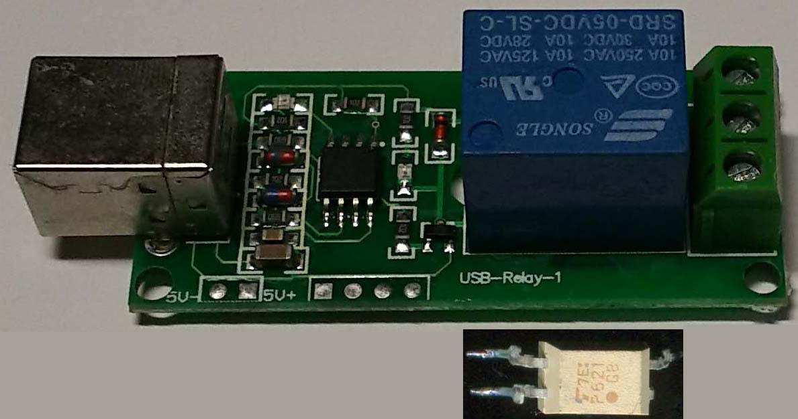

パソコンからCW送信するインターフェースは主にRS232C(USBシリアル変換) が主である。 ちまたに出回っているUSBリレーでやってみた。 USBリレーには、いろいろ種類がある。 その中で、基板に USB-Relay-2、USB-Relay-1とシルク印刷されているタイプを使用 大陸から通販で300-500円位で入手できる。 このタイプは usb_relay_device.dll を使用してプログラムできる。 ｇithubの JanOosting/delphi-keyes-relay に使い方のソースがある。 この、USBリレー基板のリレー端子を縦振り電鍵の端子につないでCW送信できるが カチカチとうるさいので、リレーをはずし、フォトカプラを付ける。